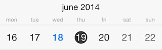
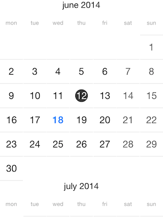

Calendar: View Modes
TKCalendar is able to present its contents in different ways. Those include:
- A single month.
- A single week.
- A list with years, containing months and month days.
- A list with month names.
- A list with year numbers.
- A flow layout with months and month days.
- A separate view controller to allow iOS 7 calendar style like experience.
This article describes those view modes in detail.
The presenter property of TKCalendar allows customizing settings specific for the current view mode. Every view mode has its dedicated presenter class:
Objective-C
TKCalendarYearPresenter *presenter = (TKCalendarYearPresenter*)calendarView.presenter;
presenter.columns = 3;
Swift
let presenter: TKCalendarYearPresenter = calendarView.presenter() as! TKCalendarYearPresenter
presenter.columns = 3
You can determine whether a view change occurred by implementing TKCalendarDelegate protocol:
Objective-C
- (void)calendar:(TKCalendar *)calendar didChangedViewModeFrom:(TKCalendarViewMode)previousViewMode to:(TKCalendarViewMode)viewMode
{
// Here you can perform the desired action when the selection is changed.
}
Swift
func calendar(calendar: TKCalendar!, didChangedViewModeFrom previousViewMode: TKCalendarViewMode, to viewMode: TKCalendarViewMode) {
// Here you can perform the desired action when the selection is changed
}
Single month view mode

Use the TKCalendarViewModeMonth to enable the single month view:
Objective-C
calendarView.viewMode = TKCalendarViewModeMonth;
Swift
calendarView.viewMode = TKCalendarViewModeMonth
In this mode TKCalendar renders a single month and allows switching to a different month with a swipe gesture. This transition can be customized with different transition effects. More about this is available in this help article: Transition effects
In addition to selecting a different month with swipe, users can change the view mode to month names when the allowPinchZoom property is set to YES:
Objective-C
calendarView.allowPinchZoom = YES;
Swift
calendarView.allowPinchZoom = true
Dates can be selected according to the selectionMode property. Details about selection are available in the dedicated help article about selection: Selection
Dates in this view mode are represented by the TKCalendarCell class which inherits from UIView. The visual appearance can be customized by creating custom cells and handling the calendar:viewForCellOfKind: method of TKCalendarDelegate protocol. This technique is described in Calendar customizations article.
The presenter class responsible for month view is the TKCalendarMonthPresenter class. It contains a style property where different UI settings can be tuned. For example:
Objective-C
TKCalendarMonthPresenter *monthPresenter = (TKCalendarMonthPresenter*)calendarView.presenter;
monthPresenter.style.rowSpacing = 2;
monthPresenter.style.columnSpacing = 2;
monthPresenter.titleHidden = YES;
Swift
let monthPresenter = calendarView.presenter() as! TKCalendarMonthPresenter
monthPresenter.style().rowSpacing = 2
monthPresenter.style().columnSpacing = 2
monthPresenter.titleHidden = true
Single week view mode

Set the viewMode property to TKCalendarViewModeWeek to enable this view:
Objective-C
calendarView.viewMode = TKCalendarViewModeWeek;
Swift
calendarView.viewMode = TKCalendarViewModeWeek
This view mode is similar to the previous one, but it displays only one week. The presenter class for this view mode is TKCalendarWeekPresenter, it inherits from TKCalendarMonthPresenter and allows the same customization and behavior features.
List with years view mode

Set the viewMode property to TKCalendarViewModeYear to enable this view:
Objective-C
calendarView.viewMode = TKCalendarViewModeYear;
Swift
calendarView.viewMode = TKCalendarViewModeYear
This view mode displays a list of years with their months and dates. The user can select months by tapping on them.
The presenter class for this view mode is TKCalendarYearPresenter.
List with month names

Set the viewMode property to TKCalendarViewModeMonthNames to enable this view.
Objective-C
calendarView.viewMode = TKCalendarViewModeMonthNames;
Swift
calendarView.viewMode = TKCalendarViewModeMonthNames
The month names view is used together with the month view mode when the allowPinchZoom option is turned on. It allows for selecting a different month faster. Use pinch-in/out gesture to switch between single month/year numbers view mode.
The presenter class for this view mode is TKCalendarMonthNamesPresenter, it inherits from TKCalendarMonthPresenter and allows the same customization and behavior features.
List with year numbers

Set the viewMode property to TKCalendarViewModeYearNumbers to enable this view.
Objective-C
calendarView.viewMode = TKCalendarViewModeYearNumbers;
Swift
calendarView.viewMode = TKCalendarViewModeYearNumbers
The year numbers view is used together with the month view mode when the allowPinchZoom option is turned on. It allows for selecting a different year faster.
The presenter class for this view mode is TKCalendarYearNumbersPresenter, it inherits from TKCalendarMonthPresenter and allows the same customization and behavior features.
Flow layout with months and month days

Set the viewMode property to TKCalendarViewModeFlow to enable this view.
Objective-C
calendarView.viewMode = TKCalendarViewModeFlow;
Swift
calendarView.viewMode = TKCalendarViewModeFlow
The flow view displays months with single dates. Single cells are represented by the TKCalendarCell class and allow customization by handling the calendar:viewForCellOfKind method.
Only the single selection mode is available when selecting cells in flow view.
The presenter class for this view mode is TKCalendarFlowPresenter.
iOS 7 calendar style experience
The TKCalendarYearViewController class can be used to create an experience similar to the one in the built-in calendar in iOS 7. Follow these steps to add the TKCalendarYearViewController to your application:
- Add a navigation controller
- Use this code to show the year view controller in your application:
Objective-C
TKCalendarYearViewController *controller = [TKCalendarYearViewController new];
[self.navigationController pushViewController:controller animated:YES];
Swift
let controller = TKCalendarYearViewController()
self.navigationController?.pushViewController(controller, animated: true)
The contentView property of TKCalendarYearViewController contains the presented TKCalendar object instance. Use its properties and methods to customize the calendar. For example, the following code navigates to the current date:
Objective-C
[controller.contentView navigateToDate:[NSDate date] animated:NO];
Swift
controller.contentView().navigateToDate(NSDate(), animated: false)